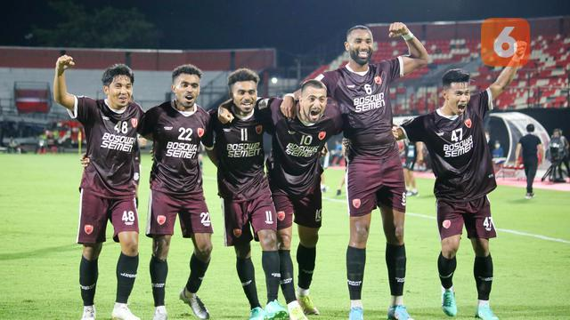

Klasemen BRI Liga 1: Hajar Rans Nusantara, PSM Makassar Tempel Madura United
PSM Makassar meramaikan persaingan papan atas pada awal BRI Liga 1 2022/2023. Juku Eja menyamai poin Madura United dan Persikabo 1973 yang menguasai dua urutan teratas klasemen Liga 1.
PSM kini mengoleksi 10 poin, sama seperti dua pesaingnya. Mereka hanya kalah selisih gol dari mereka.
Anak asuh Bernardo Tavares menambah angka usai secara dramatis menaklukkan Rans Nusantara 2-1 di Stadion Pakansari, Senin (15/8/2022). Pada laga yang sempat ditunda akibat cuaca buruk ini, Mitsuru Maruoka membawa Rans Nusantara memimpin di menit ke-31.
PSM membalas lewat gol Everton Nascimento pada menit ke-48. Rans Nusantara kemudian kehilangan Victor Sallinas Ribeiro sejak menit ke-79. PSM memanfaatkan keunggulan pemain melalui gol kedua Everton ('90+2).
Di sisi lain, kekalahan dari PSM membuat penantian Rans Nusantara di BRI Liga 1 berlanjut. Masih memburu kemenangan, pasukan Rahmad Darmawan baru mengoleksi dua poin sehingga terdampar di zona degradasi.